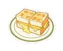
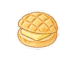
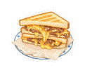

現在的問題：拿掉貨幣後，中間空了一大塊；探險只有一排小圖，看不出是什麼。三個方案都把空位用起來、字體照層級（標題 W9／內文 W7／細字 W5），按鈕照規範。
空位放三個數字：打卡幾處、走了幾公里、收集幾種美食，下面接「漫步期間發現的探險」。資訊最完整。



把探險分成兩組，各自有標題和數量，圖也放大。一眼看懂今天拿到什麼。
最簡潔：一句大字總結今天，小字補充步行距離，收穫放在一個托盤裡。面板最矮，地圖露出最多。